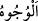

“Kendi ellerinizle kendinizi tehlikeye atmayın.” (el-Bakara, 2/195) âyetinde “eller”
ile kendileri kasdedildiği gibi “
(yüzler)” ile de onların kendilerinin kasdedilmiş
olması mümkündür. Çünkü yüz, baş, boyun ve el ile bedenin tamamı ifâde edilir.
“(Onlara) “Ancak yaptıklarınızın” ortak koşmanızın “karşılığını görmektesiniz!”
(denir).”
Burada ya iltifat[79] (gaibden hitâba geçiş) vardır, ya da burada “onlara denilir ki:”
sözü gizlenmiştir.
Bir hadîste şöyle buyrulmuştur: “Kıyamet günü olunca îman ve şirk gelip Rab
Teâlâ’nın önünde diz çökerler. Allah îmana: “Sen ve ehlin cennete gidin.” buyurur.
Şirke de: “Sen ve ehlin cehenneme gidin.” buyurur. Sonra Rasûlulllah (s.a.): “Kim
iyilikle (ilâhî huzura) gelirse, ona daha iyisi verilir. Ve onlar o gün korkudan emin
kalırlar. Kötülükle gelen kimseler ise yüzükoyun cehenneme atılırlar.” âyetlerini
okudu.
“Lâ ilâhe illallah” cennetin anahtarıdır” denilir. Kapıyı açması için anahtarın da
mutlaka dişleri olmalıdır. Yalandan ve gıybetten arınmış zâkir/zikreden bir dil, hased ve
hiyânetten arınmış huşû sâhibi bir kalb, haram ve şüpheden temizlenmiş bir karın,
günahlardan temizlenmiş ve hizmetle meşgul âzâlar o anahtarın dişlerindendir.
Ebû Abdullah Cedelî’den şöyle dediği nakledilmiştir: “Ali b. Ebû Tâlib (r.a.)’ın
yanına girdim. Bana şöyle dedi: “Ey Ebû Abdullâh, Allah’ın kendisiyle geleni cennete
girdireceği iyiliği ve kendisiyle geleni yüzükoyun cehenneme atacağı ve onunla beraber
hiçbir ameli kabul etmeyeceği kötülüğü haber vereyim mi?” Ben de: “Evet” dedim. Ali
(r.a.): “İyilik (Allah için) sevmemiz, kötülük (Allah için) buğzetmemizdir.”
Bilesin ki Allah Teâlâ “Ey Rabbimiz! Bize dünyada da iyilik ver, âhirette de iyilik
ver.” (el-Bakara, 2/201) buyurarak kullarını dünyada iyilikleri (hasenât) istemeye
yönlendirmiştir. Dünyada iyilik, onların hakîkat erbâbının terbiyesiyle tarîkat âdâbına
uygun olarak şeriât ahkâmında kullanılması/meşgul edilmesidir. Âhirette iyilik ise ebedî
ve sonsuz olarak hakîkat âleminden faydalanmaktır. İşte onlar, en büyük dehşetin dahi
kendilerini tasalandırmadığı kimselerdir. (bk. el-Enbiyâ, 21/103) Çünkü onlar
dünyada muhabbetin dehşetine/korkusuna tutulmuşlardır. Bu yüzden muhabbetin
korkusu, onlar için ukbânın korkusu yerine hesap olunmuştur. Kim de dünya sevgisi ile
gelirse, onlar Hak’tan ayrı düşme ateşine/cehenneme yüzükoyun atılırlar. Onlara:
“Ancak yaptıklarınızın” yâni dünya talebinizin “karşılığını görmektesiniz!” denir.
Çünkü dünya, cehennemin ve derekelerinin yüzüne binâ edilmiştir. Kim onu taleb
etmeye çıkarsa cehenneme düşer.
Firkat ateşinden kurtulmak istersen
Aşk ve muhabbetten gayrisine gönül bağlama